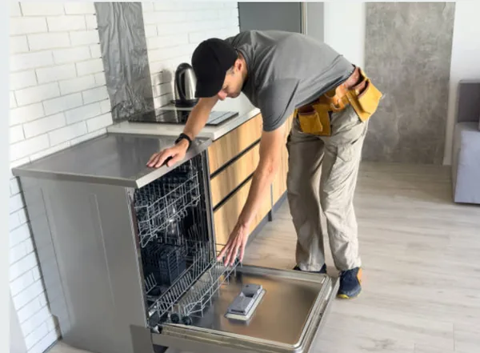
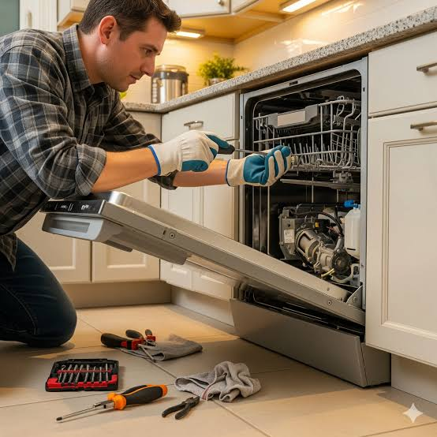

غسالة الأطباق هي الجهاز الأساسي المريح في المطبخ لتنظيف وتطهير الأواني بكفاءة عالية، وتعمل بجهد كبير لضمان نظافة عائلتك. ولأنها تعمل بمنظومة مياه وسخانات دقيقة فإنها ترسل إشارات إنذار مبكرة قبل أن تتوقف فجأة؛ ومن أبرز هذه العلامات صدور صوت صاخب أو اهتزاز غير معتاد، ضعف تنظيف الأطباق وبقاء بقايا طعام، عدم تسخين المياه، تسريب مياه من أسفل الجهاز، استمرار البرنامج دون إنهاء أو توقف مفاجئ، ظهور كود خطأ على الشاشة الرقمية، أو صدور روائح غير مقبولة من الداخل.
كل علامة من هذه العلامات توضح أن هناك مكوناً يعمل خارج نطاق كفاءته التصميمية، والتدخل المبكر يحمي قطع الغيار الرئيسية مثل طلمبة الطرد، السخان، أو كارتة التحكم من التلف الكامل ويحافظ على ميزانيتك ونظافة أطباقك.
تخضع غسالات الأطباق لظروف تشغيل صعبة مع تكرار دورات الغسيل اليومية، واستخدام المياه المحملة بالاملاح، إلى جانب تذبذب التيار الكهربائي المفاجئ، وهي عوامل تسرع من إجهاد الدائرة الميكانيكية والكهربائية وتؤثر على كفاءة التعقيم.
هذه الظروف تجعل السخان، طلمبة الطرد، ورشاشات المياه يعملون بجهد مضاعف، ولهذا فإن أغلب بلاغات الأعطال تتعلق بانسداد فلاتر الصرف، تلف كاوتش الباب وتسريب المياه، أو ترسبات الأملاح والجير، وهي مشاكل نحلها بمهنية في زيارة منزلية واحدة.
غسالة الأطباق تعتمد على منظومة ذكية تبدأ بملء المياه وضبط مستوى الملح والمسحوق، ثم تسخين المياه عبر السخان القوي لدرجات حرارة عالية تضمن التعقيم، مروراً بضخ المياه عبر الرشاشات الدوارة لتنظيف الأواني، وتنتهي بطرد المياه المستعملة عبر طلمبة الصرف.
كارتة التحكم الإلكترونية هي المسؤول عن تنظيم دورات الغسيل بدقة وتوقيتات السحب والصرف، وأي خلل في هذه المنظومة يوقف التنظيف تماماً أو يتسبب في توقف البرنامج.
غسالة الأطباق الاقتصادية (10 أفراد أو الحجم الصغير) توفر مساحة ممتازة للمطابخ الضيقة وتناسب الأسر الصغيرة أو الاستخدام المعتدل، وتستهلك كميات أقل من المياه والكهرباء في كل دورة.
أما غسالة الأطباق الكبيرة (13 أو 14 فرد) فتتميز بقدرتها الهائلة على استيعاب الأواني الكبيرة، الحلل، والصواني الكبيرة دفعة واحدة، واحتوائها على برامج تنظيف متقدمة وتعقيم بالبخار، لكنها تتطلب مساحة عرض مناسبة في المطبخ.

فحص الدائرة الكهربائية والسخان
إصلاح وصيانة غسالات الأطباق بالمنزلالفارق بين تركيب قطعة غيار أصلية وأخرى مقلدة يظهر سريعاً في كفاءة التنظيف واستهلاك الكهرباء والمياه. تلتزم المؤسسة المعتمدة بتوريد وتركيب طلمبات، سخانات، رشاشات، وكارتات أصلية 100% مع فاتورة رسمية، ويشمل الضمان ستة شهور كاملة على القطعة وعلى المصنعية المنفذة، مع زيارة مجانية تماماً إذا تكرر نفس العطل.
غالباً يرجع لانسداد فتحات الرشاشات، أو انسداد الفلتر السفلي، أو عدم استخدام مسحوق غسيل بالكمية والجودة المناسبة.
بسبب تلف السخان الكهربائي داخل الغسالة، عطل في ثرموستات الحرارة، أو مشكلة في كارتة التحكم تفصل إشارة السخان.
نعم، 95% من أعطال غسالات الأطباق وتسريب المياه وإصلاح الكارتات يتم إنجازها باحترافية تامة داخل منزلك دون أي نقل للجهاز.
تتراوح المدة حسب البرنامج المختار من ساعة إلى ساعتين ونصف تقريباً، وتعتمد على درجة الحرارة المطلوبة.
نعم بشكل أساسي لحماية السخان والمكونات الداخلية من ترسبات الجير والأملاح، خاصة مع مياه الشرب العادية.
تواجه مشكلة في جهازك؟ اختر العطل من القائمة أدناه لمعرفة الأسباب المحتملة وطرق الإصلاح، أو اتصل بنا مباشرة على 19580
الأطباق تخرج غير نظيفة وبها آثار بقع أو طعام.
الأسباب المحتملة: انسداد رشاشات المياه، انسداد الفلتر، أو ضعف التسخين.
الأواني تخرج باردة ومبللة بالكامل بعد انتهاء الدورة.
الأسباب المحتملة: تلف السخان، عطل الثرموستات، أو مشكلة بالكارتة.
تجمع المياه في قاع الغسالة وعدم خروجها للخارج.
الأسباب المحتملة: انسداد طلمبة الطرد، التواء خرطوم الصرف، أو تلف الطلمبة.
تكون بركة مياه على أرضية المطبخ بجانب الجهاز.
الأسباب المحتملة: تلف كاوتش الباب، قطع في خراطيم التوصيل أو الصرف.
اللوحة الشاشية واللمبات مطفية والجهاز صامت تماماً.
الأسباب المحتملة: عطل فيش الكهرباء، قفل الباب، أو كارتة التحكم.
ضوضاء واضحة أثناء سحب أو طرد المياه والدورة.
الأسباب المحتملة: احتكاك الأواني بالرشاشات، أو تلف بيللي طلمبة الطرد.
روائح غير مقبولة عند فتح باب الغسالة.
الأسباب المحتملة: تراكم الدهون وبقايا الطعام بالفلتر السفلي والحلة.
الأسعار المذكورة تقديرية لأعطال غسالات الأطباق وتختلف حسب الموديل ونوع قطعة الغيار، ويتم إبلاغك بالسعر النهائي بعد الفحص وقبل بدء الإصلاح.
صيانة غسالات أطباق بوش (Bosch) خدمة منزلية كاملة يصل فيها إليك فني متخصص مجهز بالمعدات الحديثة وقطع الغيار الأصلية، ليتم الإصلاح أمامك من الزيارة الأولى، وهي الخدمة التي نالت بها المؤسسة المعتمدة ثقة آلاف العملاء.
فريقنا الفني منتشر في مختلف المحافظات والمناطق، لنضمن الوصول إليك أينما كنت في أسرع وقت ممكن.
التكلفة عندنا شفافة بالكامل: رسوم كشف معلنة وثابتة، وتكلفة إصلاح يتم الاتفاق عليها بعد التشخيص وقبل بدء أي عمل؛ لا توجد رسوم مخفية أو مفاجآت، وتحصل على فاتورة رسمية بكل التفاصيل.
قبل أي إصلاح نجري فحصاً شاملاً يشمل قياس الجهد، اختبار دائرة التسخين، ومراجعة الحساسات؛ هذا التشخيص الدقيق يضمن معالجة السبب الجذري للعطل.
خدمتنا متاحة طوال أيام الأسبوع. اتصل الآن على 19580 واحصل على خدمة صيانة فورية ومضمونة.
صيانة غسالات أطباق أريستون (Ariston) بمعايير احترافية: كشف دقيق بأجهزة قياس حديثة، قطع غيار أصلية مناسبة لكل موديل، وفني مدرب يشرح لك سبب العطل قبل أي إصلاح — هذا ما يحصل عليه عملاء المؤسسة المعتمدة في كل زيارة.
نلتزم بتقديم تقرير فني مفصل عن حالة الجهاز والأجزاء التي تحتاج إصلاحاً أو استبدالاً، مع فاتورة رسمية وضمان مكتوب على كل عملية صيانة.
تشمل خدمتنا جميع أنواع أعطال غسالات الأطباق دون استثناء: طلمبات الطرد، السخانات، برامج التشغيل، بالإضافة إلى أعمال الصيانة الدورية التي تطيل عمر الجهاز.
كل إصلاح مشمول بضمان شامل على العمل والقطع، وأسعارنا عادلة ومعلنة بدون أي زيادات. اطلب فنياً الآن على 19580.
صيانة غسالات أطباق بيكو (Beko) خدمة منزلية متكاملة يصل فيها إليك فني متخصص مجهز بأحدث أدوات الفحص وقطع الغيار الأصلية، ليتم الإصلاح أمامك من الزيارة الأولى.
يستخدم فنيونا أجهزة القياس والتشخيص الإلكتروني لتحديد الأعطال بدقة متناهية، مما يوفر عليك الوقت والمال ويضمن إصلاحاً صحيحاً من المرة الأولى.
فريق خدمة العملاء متاح يومياً للرد على استفساراتك وتحديد المواعيد بمرونة تامة عبر الهاتف أو الواتساب أو من خلال موقعنا الإلكتروني.
نمنح ضماناً حقيقياً على الإصلاح وقطع الغيار المستبدلة يصل إلى 6 شهور كاملة. للحجز اتصل بالخط الساخن 19580.
عندما يتعطل جهازك فجأة فأنت تحتاج صيانة غسالات أطباق زانوسي (Zanussi) من جهة موثوقة تصلك بسرعة؛ لهذا يعتمد آلاف العملاء على الفنيين المعتمدين لدى المؤسسة المعتمدة في إصلاح أعطالهم داخل المنزل دون نقل الجهاز.
لدينا خبرة تراكمية واسعة في إصلاح جميع أعطال غسالات الأطباق مهما كانت بسيطة أو معقدة، بما في ذلك مشاكل التسريب والتنظيف والتسخين.
قبل أي إصلاح نجري فحصاً دقيقاً يشمل السخان، الطلمبة، ونظام الصرف؛ لضمان معالجة المشكلة من جذورها وعدم تكرارها نهائياً.
لا تتردد في التواصل معنا على 19580 للحصول على استشارة فنية مجانية وحجز موعد الصيانة في الوقت المناسب لك.
صيانة غسالات أطباق وايت ويل (White Whale) لم تعد مهمة صعبة أو مكلفة؛ فبفضل شبكة فنيين تغطي جميع المناطق وخبرة طويلة، توفر لك المؤسسة المعتمدة إصلاحاً سريعاً بقطع أصلية وأسعار عادلة ومعلنة.
نلتزم بتقديم تقرير فني مفصل عن حالة الجهاز والأجزاء التي تحتاج صيانة، مع فاتورة رسمية وضمان مكتوب على الخدمة.
تشمل خدمتنا كافة أعطال غسالات الأطباق الصغيرة والكبيرة مع توفير حلول فورية لكل المشاكل الفنية بالمنزل.
كل إصلاح مشمول بضمان شامل، وأسعارنا واضحة وثابتة. اطلب فنياً الآن على 19580.
صيانة غسالات أطباق إل جي (LG) خدمة منزلية متخصصة تتعامل مع المواتير الانفرتر والكارتات الذكية بأعلى كفاءة، مع توفير قطع الغيار الأصلية المعتمدة وبرامج التشغيل الأصلية.
فريقنا مدرب خصيصاً على التعامل مع التقنيات الحديثة في غسالات أطباق إل جي وبرامجه لتوفير تشخيص سريع وإصلاح دقيق من الزيارة الأولى.
نقدم ضماناً معتمداً لمدة 6 شهور على جميع أعمال الإصلاح والقطع المستبدلة لراحة بالك التامة. اتصل بنا على 19580.
صيانة غسالات أطباق سامسونج (Samsung) خدمة منزلية كاملة يصل فيها إليك فني متخصص مجهز بالمعدات وقطع الغيار الأصلية، ليتم الإصلاح أمامك بكل احترافية وأمان.
يستخدم فنيونا أحدث أجهزة قياس الضغط والدوائر الكهربائية لتحديد الأعطال بدقة متناهية، مما يوفر عليك الوقت والجهد ويضمن كفاءة التنظيف بنسبة 100%.
خدمتنا متاحة طوال أيام الأسبوع. اتصل الآن على 19580 واحصل على خدمة صيانة فورية.
نغطي محافظات الدلتا بالكامل. اختر محافظتك أو مدينتك.
سواء بتقول صيانة غسالات أطباق أو بأي صيغة تانية، الخدمة واحدة والرقم واحد: 01289966660
كل فني مدرب على أعطال غسالات الأطباق ودوائر المياه والتسخين تحديداً والمكونات الدقيقة، وليس فنياً عاماً لكل شيء.
نستخدم قطع غيار أصلية ومضمونة 100% مع إطلاعك على القطعة القديمة قبل استبدالها.
ضمان مكتوب على المصنعية وقطع الغيار، وإعادة الزيارة مجاناً لو تكرر نفس العطل.
نود التوضيح الكامـل لعملائنا الكرام أن مؤسسة المعتمد جروب هي مركز خدمة وصيانة معتمد خارجي للأجهزة المنزلية، ولسنا الشركة الرئيسية أو الوكيل الحصري المصنّع للعلامات التجارية المختلفة؛ نحن نقدم خدمات الصيانة الفورية، الإصلاح، وتوفير قطع الغيار الأصلية بكفاءة عالية وبخبرة فنية متخصصة لراحة عملائنا.
في مؤسسة المعتمد جروب، نُدرك تماماً أهمية خصوصيتك ونلتزم التزاماً كاملاً بحماية بياناتك الشخصية بكل أمان وشفافية تامة أثناء طلبك لخدمات الصيانة المنزلية.
جميع البيانات التي تقدمها لنا (مثل: الاسم، رقم الهاتف، والعنوان التفصيلي) تُستخدم حصرياً لتنفيذ طلب الصيانة وتوجيه الفريق الفني المعتمد لمنزلك في أسرع وقت، ولا يتم مشاركتها أبداً مع أي طرف ثالث.
نستخدم أحدث تقنيات التشفير الرقمي وبروتوكولات الأمان لضمان حماية وسائط الاتصال بين جهازك وموقعنا، مما يمنع أي محاولات لاعتراض أو استطلاع بياناتك أثناء التصفح أو إرسال طلبات الصيانة.
تستعين منصة المعتمد جروب بملفات تعريف الارتباط البسيطة لتحسين تجربتك في تصفح الموقع، تذكر تفضيلاتك، وتقديم محتوى ملائم وسريع يلبي احتياجاتك الفنية فوراً.
قد نستخدم رقم هاتفك للتواصل معك فقط بشأن حالة طلب الصيانة الخاص بك، أو إرسال تفاصيل الفاتورة والضمان المعتمد، مع الاحتفاظ بحقك الكامل في طلب مراجعة، تعديل، أو حذف بياناتك في أي وقت.